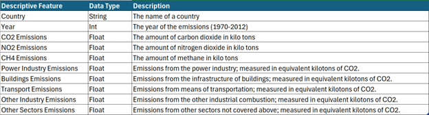
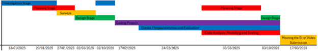
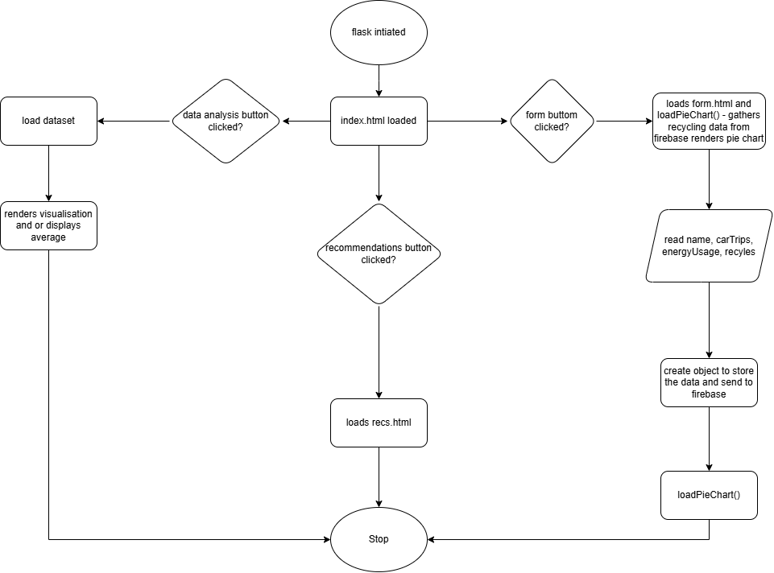

I began my research with the links provided in the brief, in which I found the EDGAR (Emissions Database for Global Atmospheric Research) dataset from the CORGIS Dataset Project, which serves as a comprehensive, independent, and multipurpose global database that tracks anthropogenic emissions of greenhouse gases and air pollution worldwide. This data serves environmental organisations and policymakers. The purpose is to inform climate policy and environmental impact. [1]
TuTiempo’s global climate data showed climate information for every country with historical data from 1929, with an interactive dashboard. It allows the ability to check the weather from more than 9000 stations all around the world, showing average temperatures and more. This data serves historians and archaeologists. The purpose is to provide accurate historical weather information and to monitor environmental changes. [2]
ETH Zurich’s ECO dataset (Electricity Consumption & Occupancy) provides information on the consumption of electricity in the average Swiss household over a period of 8 months. It provides consumption data, and occupancy information. This data serves urban planners and environmental scientists. The purpose is to assess and monitor environmental conditions and reduce emissions. [2]
One in greater detail
The EDGAR (Emissions Database for Global Atmospheric Research) dataset gives a comprehensive overview of the global greenhouse gas emissions, analysing trends over different countries, and regions. The dataset compiles data from a diversity of sources, including national emission inventories, academic research and reports from international organisations, which give an understanding of emissions from fossil fuel use, industrial activities and changes in land use. According to the dataset, CO2 emissions from fossil fuels were shown as the main drivers of global warming, with significant contributions from both developed and industrialising countries. One drawback of said dataset is that it is not able to reflect any real-time data for new sources of emissions. It also does not provide an interactive dashboard to represent the data in a visual way which may create a gap in our overall understanding of the greenhouse gas landscape. My interest in this dataset is propelled by the sheer importance of the analysis of emissions data to allow humans to comprehend the true influence of climate change, which is vital for our survival as a species. I did not choose ETH Zurich’s ECO dataset because it focuses on environmental data which is important but fails to align with my specific interest in global health.
The solution I will address is the EDGAR (Emissions Database for Global Atmospheric Research) dataset, which primarily focuses on global greenhouse gas emissions and challenges in making the threat of climate change known. I will create a website with interactive maps, graphs, and charts which will allow the user to explore the data effortlessly whilst highlighting insights such as the carbon dioxide (CO2) emissions from burning fossil fuels in different countries and regions.

Figure 1: Descriptive Features of the Project

Figure 2: Project Timeline
Objectives:
Meeting the Requirements:
To gather the data, I will use the dataset provided by the reliable CORGIS dataset project. Using Pandas with Python, I will extract, clean, and format the data, making it suitable for analysis and exporting it to a .csv file.
For data analytics and visualization, Pandas DataFrames will allow me to analyze the dataset, and Plotly will help create interactive line graphs, bar charts, pie charts, and maps to show greenhouse gas emission trends, such as carbon dioxide emissions regionally. All visualizations will include titles, axis labels, and legends.
The interactive information system will be a web dashboard that displays the visualizations and insights, such as highlighting China's leadership in carbon dioxide emissions.
To ensure users can interact with the visualizations, I will add hover functionality to display detailed data values.
A JavaScript-based survey will be included to gather user data as a poll. This survey will collect at least three types of data: Name (text input), number of car trips per week (number input), monthly energy usage in kWh (number input), and whether they recycle or not (radio boolean). The form will include validation to ensure accurate inputs and store responses in a Firebase database.
The system will then pull this data from the Firebase database and use Plotly to create a pie chart showing the percentage of people who recycle compared to those who don’t. This chart will be kept constantly up-to-date on the form page, thanks to Firebase storing all poll results and staying online 24/7.
A Flask server will host the web app, connecting the backend with the frontend.
Pandas will clean and structure the dataset, making it easier to filter and sort the data, preparing it for transformation into visualizations and insights.
Plotly will enable interactive visualizations like line graphs, bar charts, pie charts, and maps, allowing users to hover for details, filter data by region, and adjust ranges.
JavaScript will handle interactivity, such as survey input validation and dynamic data filtering on the dashboard, while HTML structures the content and CSS styles it.
AJAX will enable dynamic updates to the dashboard without requiring a full page reload, allowing the dashboard to fetch data like statistical results or graphs dynamically, enhancing interactivity and user experience.
Firebase will securely store survey data in real-time, enabling dynamic updates to the poll visualization (pie chart).
Jsonify will convert Plotly visualizations to the JSON format, which the website can read, enhancing interactivity and optimizing the visualizations.
HTML will organize the web interface, CSS will style it, and JavaScript will make it interactive. JavaScript will handle dynamic aspects, such as survey validation, filtering options, and real-time data updates, creating an engaging and responsive user experience.
